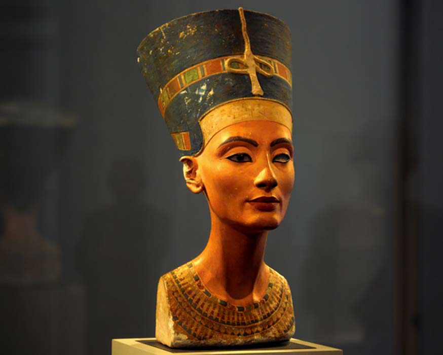
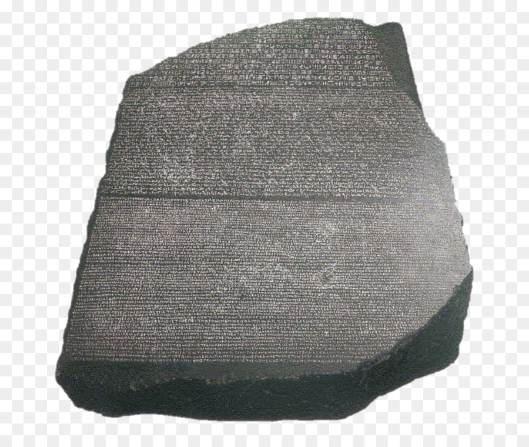

Galeria Egipcia

Busto de Nefertiti
El busto de Nefertiti es un busto de piedra caliza con estuco pintado que corresponde a Nefertiti, la gran esposa real del faraón egipcio Akenatón. Se cree que Tutmose lo realizó en 1345 a. C. debido a que se encontró en su taller en Amarna, Egipto.

Paleta de Narmer
La Paleta de Narmer es una placa de pizarra tallada con bajorrelieves, descubierta en 1898 por James Quibell y Green en el templo de Horus de Hieracómpolis (Nejen), y actualmente depositada en el Museo Egipcio de El Cairo.

Piedra de Rosetta
La piedra de Rosetta es un fragmento de una antigua estela egipcia de granodiorita inscrita con un decreto publicado en Menfis en el año 196 a. C. en nombre del faraón Ptolomeo V. El decreto aparece en tres escrituras distintas.